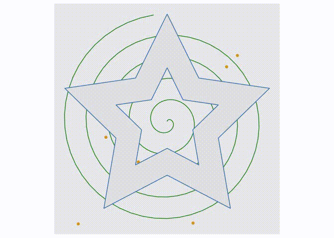

If you’ve ever made animated data visualisations you’ll know that arbitrary polygons and lines requires special considerations if the animation is to be smooth and believable. transformr is able to remove all of these worries by expanding tweenr to understand spatial data, and thus lets you focus on defining your animation steps. transformr takes care of matching shapes between states, cutting some in bits if the number doesn’t match between the states, and ensures that each pair of matched shapes contains the same number of anchor points and that these are paired up so as to avoid rotation and inversion during animation.
transformr supports both polygons (with holes), and paths either encoded as simple x/y data.frames or as simpel features using the sf package.
Installation
You can install transformr from CRAN using install.packages('transformr') or grab the development version from github with:
# install.packages("devtools")
devtools::install_github("thomasp85/transformr")Examples
These are simple, contrieved examples showing how the API works. It scales simply to more complicated shapes.
Polygon
A polygon is simply a data.frame with an x and y column, where each row demarcates an anchor point for the polygon. The polygon is not in closed form, that is, the first point is not repeated in the end. If more polygons are wanted you can provide an additional column that indicate the polygon membership of a column (quite like ggplot2::geom_polygon() expects an x, y, and group variable). If holed polygons are needed, holes should follow the main polygon and be separated with an NA row in the x and y column.
library(transformr)
library(tweenr)
library(ggplot2)
polyplot <- function(data) {
p <- ggplot(data) +
geom_polygon(aes(x, y, group = id, fill = col)) +
scale_fill_identity() +
coord_fixed(xlim = c(-1.5, 1.5), ylim = c(-1.5, 1.5))
plot(p)
}
star <- poly_star()
star$col <- 'steelblue'
circles <- poly_circles()
circles$col <- c('forestgreen', 'firebrick', 'goldenrod')[circles$id]
animation <- tween_polygon(star, circles, 'cubic-in-out', 40, id) %>%
keep_state(10)
ani <- lapply(split(animation, animation$.frame), polyplot)By default the polygons are matched up based on their id. In the above example there’s a lack of polygons in the start-state, so these have to appear somehow. This is governed by the enter function, which by default is NULL meaning new polygons just appear at the end of the animation. We can change this to get a nicer result:
# Make new polygons appear 2 units below their end position
from_below <- function(data) {
data$y <- data$y - 2
data
}
animation <- tween_polygon(star, circles, 'cubic-in-out', 40, id, enter = from_below) %>%
keep_state(10)
ani <- lapply(split(animation, animation$.frame), polyplot)Similar to the enter function it is possible to supply an exit function when the start state has more polygons than the end state. These functions get a single polygon with the state it was/will be, that can then be manipulated at will, as long as the same number of rows and columns are returned.
The
enterandexitfunctions have slightly different semantics here than intweenr::tween_state()where it gets all entering/exiting rows in one go, and not one-by-one
Our last option is to not match the polygons up, but simply say “make everything in the first state, into everything in the last state… somehow”. This involves cutting up polygons in the state with fewest polygons and match polygons by minimizing the distance and area difference between pairs. All of this is controlled by setting match = FALSE in tween_polygon(), and transformr will then do its magic:
animation <- tween_polygon(star, circles, 'cubic-in-out', 40, id, match = FALSE) %>%
keep_state(10)
ani <- lapply(split(animation, animation$.frame), polyplot)
Paths
Paths are a lot like polygons, except that they don’t wrap-around. Still, slight differences in how they are tweened exists. Chief among these are that the winding order are not changed to minimize the travel-distance, because paths often have an implicit direction and this should not be tampered with. Further, when automatic matching paths (that is, match = FALSE), paths are matched to minimize the difference in length as well as the pair distance. The same interpretation of the enter, exit, and match arguments remain, which can be seen in the two examples below:
pathplot <- function(data) {
p <- ggplot(data) +
geom_path(aes(x, y, group = id)) +
coord_fixed(xlim = c(-1.5, 1.5), ylim = c(-1.5, 1.5))
plot(p)
}
spiral <- path_spiral()
waves <- path_waves()
animation <- tween_path(spiral, waves, 'cubic-in-out', 40, id, enter = from_below) %>%
keep_state(10)
ani <- lapply(split(animation, animation$.frame), pathplot)
animation <- tween_path(spiral, waves, 'cubic-in-out', 40, id, match = FALSE) %>%
keep_state(10)
ani <- lapply(split(animation, animation$.frame), pathplot)
Simple features
The sf package provides an implemention of simple features which are a way to encode any type of geometry in defined classes and operate on them. transformr supports (multi)point, (multi)linestring, and (multi)polygon geometries which acount for most of the use cases. When using the tween_sf() function any sfc column will be tweened by itself, while the rest will be tweened by tweenr::tween_state(). For any multi type, the tweening progress as if match = FALSE in tween_polygon() and tween_path(), that is polygons/paths are cut and matched to even out the two states. For multipoint the most central points are replicated to ensure the same number of points in each state. One nice thing about sf is that you can encode different geometry types in the same data.frame and plot it all at once:
sfplot <- function(data) {
p <- ggplot(data) +
geom_sf(aes(colour = col, geometry = geometry)) +
coord_sf(datum = NA) + # remove graticule
scale_colour_identity()
plot(p)
}
star_hole <- poly_star_hole(st = TRUE)
circles <- poly_circles(st = TRUE)
spiral <- path_spiral(st = TRUE)
waves <- path_waves(st = TRUE)
random <- point_random(st = TRUE)
grid <- point_grid(st = TRUE)
df1 <- data.frame(
geo = sf::st_sfc(star_hole, spiral, random),
col = c('steelblue', 'forestgreen', 'goldenrod')
)
df2 <- data.frame(
geo = sf::st_sfc(circles, waves, grid),
col = c('goldenrod', 'firebrick', 'steelblue')
)
animation <- tween_sf(df1, df2, 'cubic-in-out', 40) %>%
keep_state(10)
ani <- lapply(split(animation, animation$.frame), sfplot)